Numerical methods for ODEs¶
In this section, we will look at numerical methods, in particular, those employed in GSEIM. Although this section is not strictly required for using GSEIM, it would help the user to develop a better understanding of GSEIM (and to some extent other simulators with similar capabilities). Most of the material presented in this section is taken directly from the SEQUEL manual. The reader may find it useful to check out the references listed there.
Explicit methods¶
Consider the ODE,
In order to solve the ODE numerically, we discretise the time axis from \(t_{\mathrm{start}}\) to \(t_{\mathrm{end}}\) as shown below, and then replace the original ODE with an approximate equation that depends on the numerical method being employed.
{kind=link}
Fig. 2 Time discretisation
We are interested in getting a numerical solution i.e., the discrete values \(x_1\), \(x_2\), \(\cdots\), corresponding to \(t_1\), \(t_2\), etc. Throughout this section, we will denote the exact solution by \(x(t)\); e.g., \(x(t_1)\) means the exact solution at \(t_1\). On the other hand, we will denote the numerical solution at \(t_1\) by \(x_1\).
Forward Euler method¶
At \(t = t_0\), we start with \(x = x_0\) (the initial condition). From Eq. (78), we can compute the slope of \(x(t)\) at \(t_0\) which is simply \(f(t_0,x_0)\). In the Forward Euler (FE) scheme, we make the approximation that this slope applies to the entire interval \((t_0,t_1)\), i.e., from the current time point to the next time point. With this assumption, \(x(t_1)\) is given by \(x_1 = x_0+(t_1-t_0)\times f(t_0,x_0)\), as shown in the figure below.
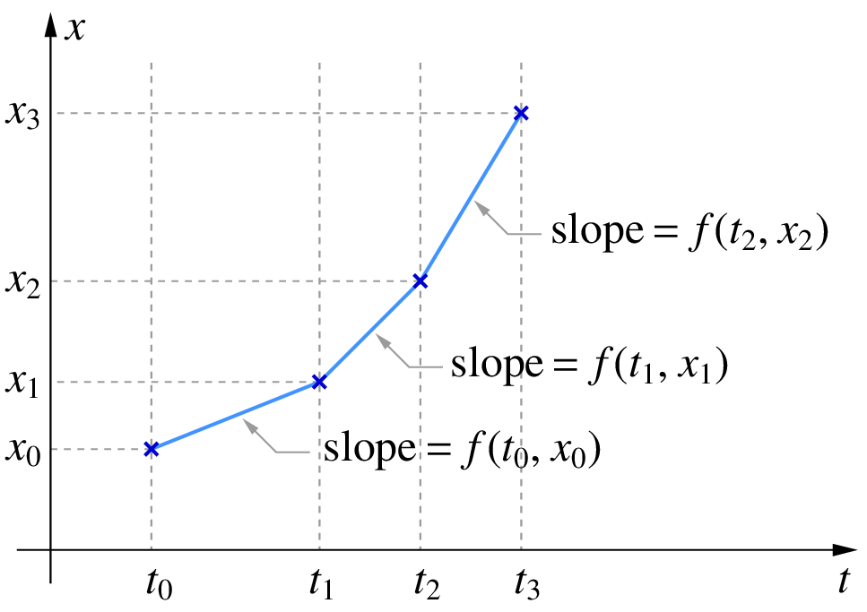{kind=link}
Similarly, from \(x_1\), we can get \(x_2\), and so on. In general, we have
where \(\Delta t_n = t_{n+1}-t_n\). Let us apply the FE method to the ODE,
which has the analytical (exact) solution,
The following C program can be used to obtain the numerical solution of Eq. (80) with the FE method.
1 2 3 4 5 6 7 8 9 10 11 12 13 14 15 16 17 18 19 20 21 22 23 24 25 | #include<stdio.h>
#include<math.h>
int main()
{
double t,t_start,t_end,h,x,x0,f;
double a,w;
FILE *fp;
x0=0.0; t_start=0.0; t_end=5.0; h=0.05;
a=1.0; w=5.0;
fp=fopen("fe1.dat","w");
t=t_start; x=x0;
fprintf(fp,"%13.6e %13.6e\n",t,x);
while (t <= t_end) {
f = a*(sin(w*t)-x);
x = x + h*f;
t = t + h;
fprintf(fp,"%13.6e %13.6e\n",t,x);
}
fclose(fp);
}
|
The numerical solution along with the analytical (exact) solution given by Eq. :eq:neq_ode_4 are shown below.
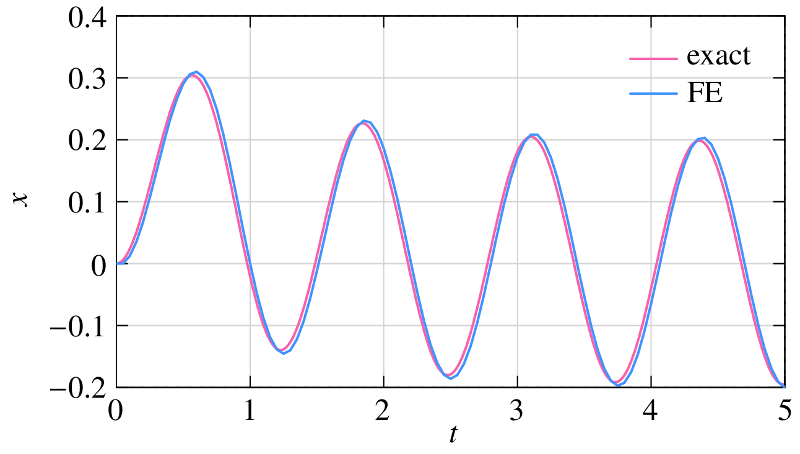{kind=link}
Note that the numerical solution appears to be continuous; however, in reality, it consists of discrete points which are generally connected with line segments serving as a “guide to the eye.” We notice some difference between the two, but it can be made smaller by using a smaller step size \(h\). (Readers new to numerical analysis should try this out by running the program with a smaller value of \(h\), e.g., \(h = 0.02\). In these matters, there is no substitute for hands-on experience.)
In general, the accuracy of a numerical method for solving ODEs is described by the order of the method which in turn depends on the Local Truncation Error (LTE) for that method. The LTE is a measure of the local error (i.e., error made in a single time step) and is defined as [Shampine, 1994],
where \(x(t_{n+1})\) is the exact solution at \(t_{n+1}\), and \(u_{n+1}\) is the solution obtained by the numerical method, starting with the exact solution \(x(t_n)\) at \(t = t_n\). If our numerical method was perfect, \(x_{n+1}\) would be the same as \(x(t_{n+1})\), and the LTE would be zero.
Let us look at the LTE of the FE method for the test equation,
with the exact solution
To compute the LTE, we take a specific \(t_n\), say, \(t_n = t_0 = 0\), and compute \(x_{n+1}\) (i.e., \(x_1\)) by performing one step of the FE method, starting with \(x_0 = 1\). The exact solution at \(t = t_{n+1} = h\) is \(x(h) = e^{-\lambda h}\). The LTE is the difference between \(x_1\) and \(x(h)\).
The LTE (magnitude) as a function of time step \(h\) is shown in the following figure. As \(h\) is reduced by a factor of 10 (from \(10^{-1}\) to \(10^{-2}\), for example), the LTE goes down by two orders of magnitude. In other words, the LTE varies as \(h^2\), and therefore the FE method is said to be of order 1. In general, if the \({\textrm{LTE}}~\sim h^{k+1}\) for a numerical method, then it is said to be of order \(k\).
{kind=link}
Fig. 3 LTE for FE and RK4
Runge-Kutta method of order 4¶
The Runge-Kutta method of order 4 (the classic form) is given by
The order of the RK4 method can be made out from LTE for FE and RK4: if \(h\) is reduced by one order of magnitude, the LTE goes down by five orders of magnitude (2.5 divisions, with each division corresponding to two decades), and therefore the order is four.
Since the RK4 method is of a higher order, we expect it to be more accurate than the FE method. Let us check that by comparing the numerical solutions obtained with the two methods for the ODE given by (80). The following program can be used for the RK4 method.
1 2 3 4 5 6 7 8 9 10 11 12 13 14 15 16 17 18 19 20 21 22 23 24 25 26 27 28 29 30 | #include<stdio.h>
#include<math.h>
int main()
{
double t,t_start,t_end,h,x,x0;
double f0,f1,f2,f3;
double a,w;
FILE *fp;
x0=0.0; t_start=0.0; t_end=5.0; h=0.05;
a=1.0; w=5.0;
fp=fopen("rk4.dat","w");
t=t_start; x=x0;
fprintf(fp,"%13.6e %13.6e\n",t,x);
while (t <= t_end) {
f0 = a*(sin(w*t)-x);
f1 = a*(sin(w*(t+0.5*h))-(x+0.5*h*f0));
f2 = a*(sin(w*(t+0.5*h))-(x+0.5*h*f1));
f3 = a*(sin(w*(t+h))-(x+h*f2));
x = x + (h/6.0)*(f0+f1+f1+f2+f2+f3);
t = t + h;
fprintf(fp,"%13.6e %13.6e\n",t,x);
}
fclose(fp);
}
|
The numerical solutions for (80) obtained with the FE and RK4 methods (crosses and squares, respectively) using a step size of \(h = 0.05\) are shown in the figure below. The exact solution is also shown (red curve). Clearly, the RK4 method is more accurate.
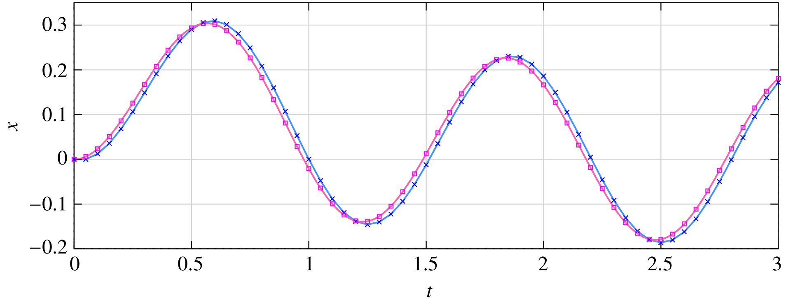{kind=link}
Both FE and RK4 are explicit methods in the sense that \(x_{n+1}\) can be computed simply by evaluating quantities based on the past values of \(x\) (see Eqs. (79) and (85)). The RK4 method is more complicated as it involves computation of the function values \(f_0\), \(f_1\), \(f_2\), \(f_3\), but the entire computation can be completed in a step-by-step manner. For example, the computation of \(f_2\) requires only \(x_n\) and \(f_1\), which are already available. The simplicity of the computation is reflected in the programs we have seen.
System of ODEs¶
The above methods (and other explicit methods) can be easily extended to a set of ODEs of the form
with the initial conditions at \(t = t_0\) specified as \(x_1(t_0) = x_1^{(0)}\), \(x_2(t_0) = x_2^{(0)}\), etc. With vector notation, we can write the above set of equations as
The FE method for this set of ODEs can be written as
and the RK4 method as
where \({\bf{x}}^{(n)}\) denotes the solution vector at time \(t_n\). As in the single-equation case, the evaluations can be performed in a step-by-step manner, enabling a straightforward implementation.
The simplicity of explicit methods makes them very attractive. Furthermore, the implementation remains easy even if the functions \(f_i\) are nonlinear. Let us illustrate this point with an example. Consider the system of ODEs given by
with the initial condition, \(x_1(0) = 0\), \(x_2(0) = 0\). If we use the FE method to solve the equations, we get
The following program, which is a straightforward extension of our earlier FE program, can be used to implement the above equations.
1 2 3 4 5 6 7 8 9 10 11 12 13 14 15 16 17 18 19 20 21 22 23 24 25 26 27 28 29 30 31 32 33 34 35 36 37 38 39 40 41 | #include<stdio.h>
#include<math.h>
int main()
{
double t,t_start,t_end,h;
double x1,x2,f1,f2,b1;
double w,a1,a2,a3,f_hz,pi;
FILE *fp;
f_hz = 5.0e3; // frequency = 5 kHz
pi = acos(-1.0);
w = 2.0*pi*f_hz;
a1 = 5.0e3;
a2 = 5.0e3;
a3 = 5.0e3;
t_start=0.0;
t_end=5.0e-3;
h=0.001e-3; // time step = 0.001 msec
x1=0.0;
x2=0.0;
fp=fopen("fe3.dat","w");
t=t_start;
fprintf(fp,"%13.6e %13.6e %13.6e\n",t,x1,x2);
while (t <= t_end) {
b1 = sin(w*t)-x1;
f1 = a1*b1*b1*b1 - a2*(x1-x2);
f2 = a3*(x1-x2);
x1 = x1 + h*f1;
x2 = x2 + h*f2;
t = t + h;
fprintf(fp,"%13.6e %13.6e %13.6e\n",t,x1,x2);
}
fclose(fp);
}
|
As simple as that! The numerical solution is shown below.
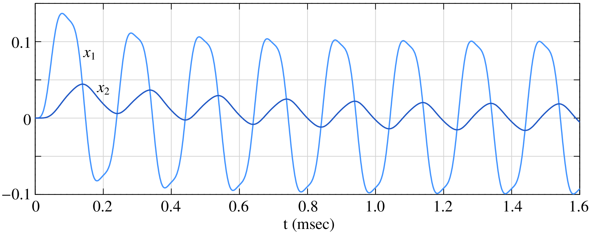{kind=link}
Adaptive time step¶
We have so far considered the time step \(h\) to be constant. When the solution has regions of fast and slow variations, it is much more efficient to use adaptive (variable) time steps. When the solution varies rapidly, small time steps are required to capture the transients accurately; at other times, larger time steps can be used. In this way, the total number of time points – and thereby the simulation time – can be made much smaller than using a small, uniform time step.
In order to implement an adaptive time step scheme, we need a mechanism to judge the accuracy of the numerical solution. Ideally, we would like to use the difference between the analytical solution and the numerical solution, i.e., \(|x(t_n)-x_n|\). However, since the analytical solution is not available, we need some other means of checking the accuracy. A commonly used method is to estimate the local truncation error by computing \(x_{n+1}\) with two numerical methods: one method of order \(p\) and the other of order \(p+1\). Let \({\textrm{LTE}}^{(p)}\) and \({\textrm{LTE}}^{(p+1)}\) denote the local truncation errors in going from \(t_n\) to \(t_{n+1}\) for the two methods, and let \(x_{n+1}\) and \(\tilde{x}_{n+1}\) be the corresponding numerical solutions. As we have seen, \({\textrm{LTE}}^{(p)}\) and \({\textrm{LTE}}^{(p+1)}\) are \(O(h^{p+1})\) and \(O(h^{p+2})\), respectively. If we assume \(x_n\) to be equal to the exact solution \(x(t_n)\), we have
Subtracting Eq. (93) from Eq. (92), we get
Since \({\textrm{LTE}}^{(p+1)}\) is expected to be much smaller than \({\textrm{LTE}}^{(p)}\), we can ignore it and obtain
Having obtained an estimate for the LTE (denoted by \({\textrm{LTE}}^{\mathrm{est}}\)) resulting from a time step of \(h_n = t_{n+1}-t_n\), we can now check if the solution should be accepted or not. If \({\textrm{LTE}}^{\mathrm{est}}\) is larger than the specified tolerance, we reject the current step and try a smaller step. If \({\textrm{LTE}}^{\mathrm{est}}\) is smaller than the tolerance, we accept the solution obtained at \(t_{n+1}\) (i.e., \(x_{n+1}\)). In this case, there is a possibility that our current time step \(h_n\) is too conservative, and we explore whether the next time step (i.e., \(h_{n+1} = t_{n+2}-t_{n+1}\)) can be made larger.
A flow chart for implementing adaptive time steps based on the above ideas is shown in the following figure.
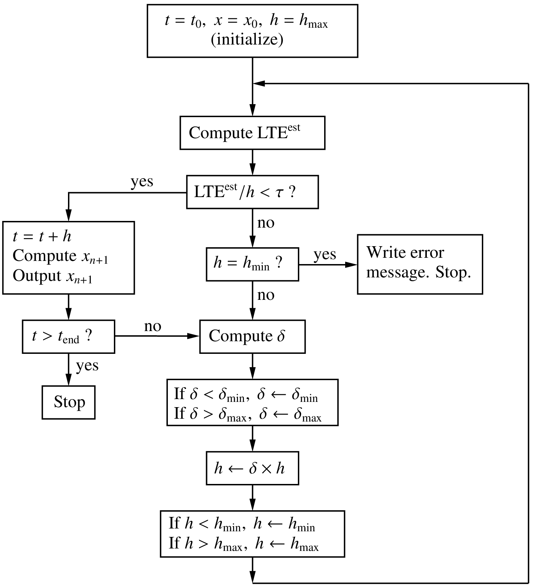{kind=link}
The tolerance \(\tau\) specifies the maximum value of the LTE per time step (i.e., \({\textrm{LTE}}/h\)) that is acceptable. The method of order \(p\) is used for actually advancing the solution, and the method of order \(p+1\) is used only to compute \({\textrm{LTE}}^{\mathrm{est}}\) using Eq. (95). Since \({\textrm{LTE}}/h\) is \(O(h^p)\), we can write
Next, we compute the time step (\(\equiv \delta \times h_n\)) which would result in an LTE per time step equal to \(\tau\), using
From Eqs. (96) and (97), we obtain \(\delta\) as
If the current LTE per time step (in going from \(t_n\) to \(t_{n+1}\)) is larger than \(\tau\) (i.e., \(\delta < 1\)), we reject the current time step and try a new time step \(h_n \leftarrow \delta \times h_n\). If it is smaller than \(\tau\), we accept the current solution (\(x_{n+1}\)). In this case, \(\delta\) is larger than one, and the next time step is taken to be \(h_{n+1} = \delta \times h_n\).
Since drastic changes in the time step are not suitable from the stability perspective [Shampine, 1994], the value of \(\delta\) is generally restricted to \(\delta _{\mathrm{min}} \leq \delta \leq \delta _{\mathrm{max}}\), as shown in the flow chart. Minimum and maximum limits are also imposed on the step size (\(h _{\mathrm{min}}\) and \(h _{\mathrm{max}}\) in the flow chart).
Different pairs of methods – of orders \(p\) and \(p+1\) – are available in the literature for implementing the above scheme. In the commonly used Runge-Kutta-Fehlberg (RKF45) pair, which consists of an order-4 method and an order-5 method, the LTE is estimated from [Burden, 2001]
where
Note that the order-4 part of this method – the computation of \(x_{n+1}\) in Eq. (99) – is different from the classic RK4 method we have seen earlier (Eq. (85)). The order-4 and order-5 methods in the RKF45 scheme are designed such that, with little extra computation (over the order-4 method), we get the order-5 result (\(\tilde{x}_{n+1}\) in Eq. (99)).
Let us illustrate the effectiveness of the RKF45 method with an example. Consider the RC circuit shown below.
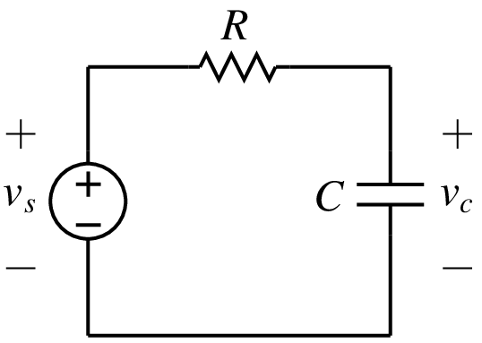{kind=link}
The behaviour of this circuit is described by the ODE,
where \(\tau = RC\), and \(v_s\) is a known function of time. In particular, we will consider \(v_s(t)\) to be a pulse going from \(0\,{\textrm{V}}\) to \(1\,{\textrm{V}}\) at \(t_1 = 0.5\,{\textrm{sec}}\) with a rise time of \(0.05\,{\textrm{sec}}\) and from \(1\,{\textrm{V}}\) back to \(0\,{\textrm{V}}\) at \(t_2 = 2\,{\textrm{sec}}\) with a fall time of \(0.05\,{\textrm{sec}}\). The solution of Eq. (101) obtained with the RKF45 method with a tolerance \(\tau = 10^{-4}\) is shown below. The other parameters are \(R = 1\,\Omega\), \(C = 1\,{\textrm{F}}\), \(\delta _{\mathrm{min}} = 0.2\), \(\delta _{\mathrm{max}} = 2\), \(h _{\mathrm{min}} = 10^{-5}\), \(h _{\mathrm{max}} = 0.5\). As we expect, the time steps are small when the solution is changing rapidly (i.e., near the pulse edges) and large when it is changing slowly.
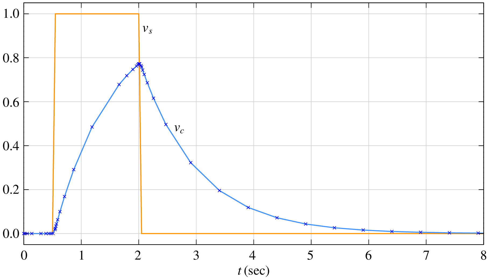{kind=link}
The tolerance \(\tau\) needs to be chosen carefully. If it is large, it may not give us a sufficiently accurate solution. For example, as seen from the following figure, the solution obtained with \(\tau = 10^{-2}\) (squares) differs significantly from that obtained with \(\tau = 10^{-4}\) (crosses).
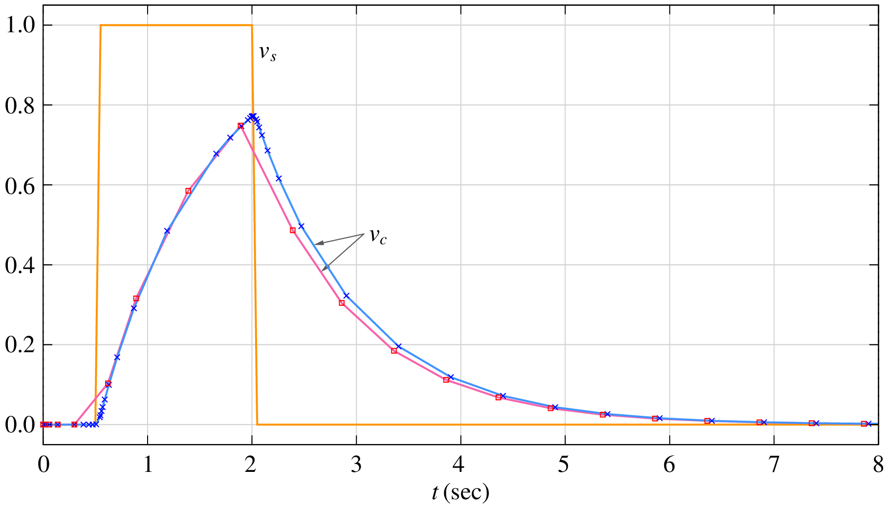{kind=link}
On the other hand, reducing \(\tau\) beyond \(10^{-4}\) does not change the solution any more, as seen in the following figure showing results for \(\tau = 10^{-4}\) (crosses) and \(\tau = 10^{-6}\) (blue graph). Note that we are being somewhat lax about terminology here – When we say that “the solution does not change”, what we mean is, “I cannot make out the difference, if any” which is often good enough in practice. Looking through the microscope for a change in the fifth decimal place is generally not called for in engineering problems.
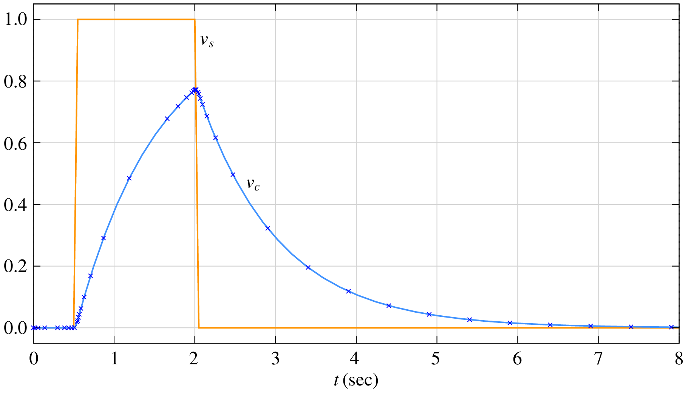{kind=link}
Although there is no perceptible difference in the results when \(\tau\) is changed from \(10^{-4}\) to \(10^{-6}\), the number of time points does increase. The following figure shows the total number of time points (\(N_{\mathrm{total}}\)) used by the RKF45 method in covering the time interval from \(t_{\mathrm{start}}\) to \(t_{\mathrm{end}}\) (i.e., 0 to 10 sec) as a function of \(\tau\).
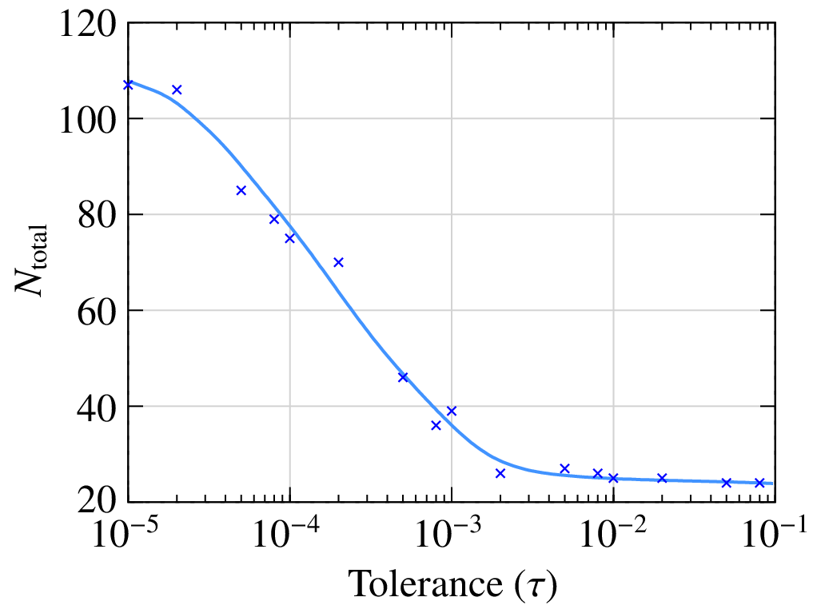{kind=link}
With a tighter tolerance (smaller \(\tau\)), the number of time points to be simulated goes up and so does the simulation time. For this specific problem, we would not even notice the difference in the computation time, but for larger problems (with a large number of variables or a large number of time points or both), the difference could be substantial.
Sometimes, there is an “aesthetics” issue. What has aesthetics got to do with science, we may ask. Consider the same RC circuit of with a sinusoidal voltage source \(V_m \sin \omega t\). The results obtained with \(\tau = 10^{-5}\) and \(\tau = 10^{-6}\) are shown below.
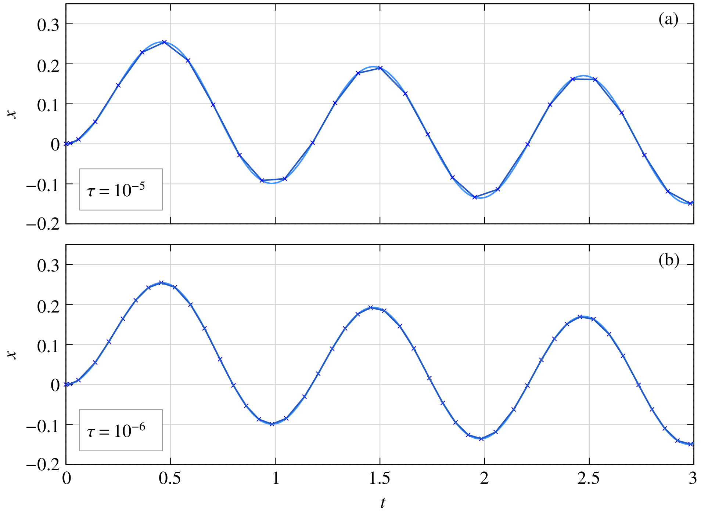{kind=link}
For \(\tau = 10^{-5}\), the solution is accurate, i.e., the numerical solution agrees closely with the analytical solution. However, it appears discontinuous because of the small number of time points. For \(\tau = 10^{-6}\), the RKF45 method forces a larger number of time points (smaller time steps) in order to meet the tolerance requirement, and the solution now appears continuous, more in tune with what we want to see.
Stability¶
Apart from being sufficiently accurate, a numerical method for solving ODEs must also be stable, i.e., its “global error” \(|x(t_n)-x_n|\) – where \(x(t_n)\) and \(x_n\) are the exact and numerical solutions, respectively, at \(t = t_n\) – must remain bounded.
Broadly, we can talk of two types of stability.
- Stability for small \(h\): Based on our discussion of local truncation error, we would expect that the accuracy of the numerical solution would generally get better if we use smaller step sizes. However, this is not true for all numerical methods. We can have a method which is accurate to a specified order in the local sense but is unstable in the global sense (i.e., the numerical solution “blows up” as time increases) even if the time steps are small. Such methods are of course of no use in circuit simulation, and we will not discuss them here.
- Stability for large \(h\): All commonly used numerical methods for solving ODEs (including the FE and RK4 methods we have seen before) can be expected to work well when the step size \(h\) is sufficiently small. When \(h\) is increased, we expect the solution to be less accurate, but quite apart from that, the solution may also become unstable, and that is a serious concern. In the following, we will illustrate this point with an example.
Consider the RC circuit shown in the figure below.
{kind=link}
Fig. 4 RC circuit with two time constants
This circuit can be described by the ODEs,
With a sinusoidal input, \(V_s = V_m\,\sin \omega t\), we can use phasors to estimate \(V_1(t)\) in steady state. In particular, let \(R_1 = 1\,{\textrm{k}}\Omega\), \(R_2 = 2\,{\textrm{k}}\Omega\), \(C_1 = 540\,{\textrm{nF}}\), \(C_2 = 1\,{\textrm{mF}}\). With these component values, and with a frequency of \({\textrm{50}}\,{\textrm{Hz}}\), we have \({\bf{Z}}_1 = -j5.9\,{\textrm{k}}\Omega\), \({\bf{Z}}_2 = -j3.2\,\Omega\). Since \({\bf{Z}}_1\) is relatively large, we can replace it with an open circuit. Similarly, since \({\bf{Z}}_2\) is small, we can replace it with a short circuit. The approximate solution for \({\bf{V}}_1\) is then simply
The numerical solution obtained with the RK4 method with a time step of $h = 1$,msec is shown below (the light blue curve). Its amplitude and phase are in agreement with Eq. (103).
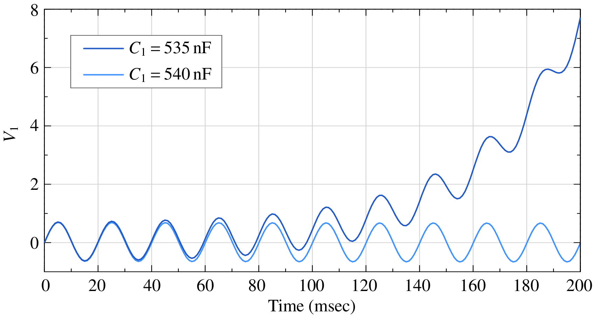{kind=link}
Do we expect any changes if \(C_1\) is changed from \(540\,{\textrm{nF}}\) to \(535\,{\textrm{nF}}\)? Nothing, really. This change is not going to significantly affect the value of \({\bf{Z}}_1\), and we do not expect the solution to change noticeably. However, as seen in the figure, the numerical solution (obtained with the same RK4 method and with the same step size) is dramatically different. It starts off being similar, but then takes off toward infinity.
Why does the value of \(C_1\) make such a dramatic difference? The answer has to do with stability of the RK4 method. The following table gives the condition for stability of a few explicit RK methods when applied to the ODE \(\displaystyle\frac{dx}{dt} = -\,\displaystyle\frac{x}{\tau}\).
| Method | Maximum step size |
|---|---|
| RK-1 (same as FE) | \(2\,\tau\) |
| RK-2 | \(2\,\tau\) |
| RK-3 | \(2.5\,\tau\) |
| RK-4 | \(2.8\,\tau\) |
We see that the RK4 method is unstable when the step size exceeds about \(2.8\, \tau\) (\(2.785\,\tau\) to be more precise). If there are several time constants governing the set of ODEs being solved, this limit still holds with \(\tau\) replaced by the smallest time constant.
Let us see the implications of the above limit in the context of our RC example described by Eq. (102). This circuit has two time constants, and they vary with \(C_1\) as shown below (with other component values held constant at their previous values, viz., \(R_1 = 1\,{\textrm{k}}\Omega\), \(R_2 = 2\,{\textrm{k}}\Omega\), \(C_2 = 1\,{\textrm{mF}}\)).
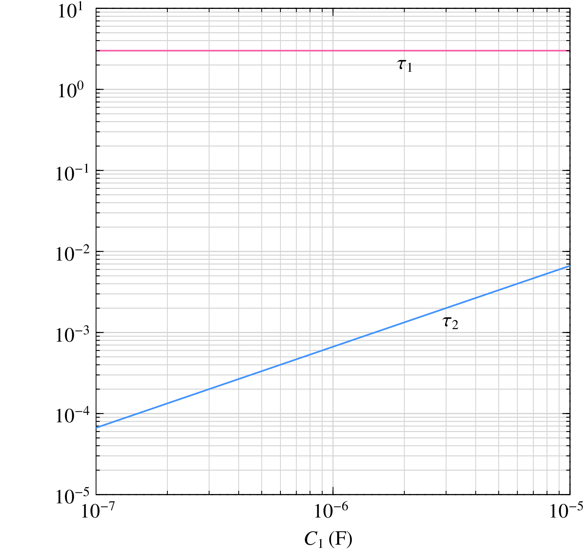{kind=link}
The time constant marked \(\tau _2\) is the smaller of the two, and it is \(0.356645\,{\textrm{msec}}\) and \(0.359978\,{\textrm{msec}}\) for \(C_1 = 535\,{\textrm{nF}}\) and \(540\,{\textrm{nF}}\), respectively. For each of these, the maximum time step \(h_{\mathrm{max}}\) to guarantee stability of the RK4 method can be obtained as \(2.785\,\tau _2\). For \(C_1 = 540\,{\textrm{nF}}\), \(h_{\mathrm{max}}\) is \(1.0025\,{\textrm{msec}}\). The actual time step used for the numerical solution \((1\,{\textrm{msec}})\) is smaller than this value, and the solution is stable. For \(C_1 = 535\,{\textrm{nF}}\), \(h_{\mathrm{max}}\) is \(0.9933\,{\textrm{msec}}\); the actual time step \((1\,{\textrm{msec}})\) is now larger than this limit, thus leading to instability.
We can handle the instability problem by reducing the RK4 time step. However, we generally do not have a good idea of the time constants in a given circuit, and we would then need to carry out a cumbersome trial-and-error process of choosing a time step, checking if it works, reducing it if it does not, and so on. In these situations, the adaptive (auto) time step methods – such as the RKF45 method discussed in the Adaptive time step section – can be used to advantage. When a given time step leads to instability, the LTE also goes up, and the adaptive step method automatically reduces the time step suitably without any intervention from the user. This is indeed an attractive choice. Let us illustrate it with an example, again the RC circuit with two time constants but with different component values, viz., \(R_1 = 1\,{\textrm{k}}\Omega\), \(R_2 = 1\,{\textrm{k}}\Omega\), \(C_1 = 1\,\mu{\textrm{F}}\), \(f = 1\,{\textrm{kHz}}\). As \(C_2\) is varied, the time constants change (as seen earlier). When the RKF45 method is used to solve the ODEs (Eq. (102)), the time step is automatically adjusted to meet the specified tolerance requirement, and a stable solution is obtained. As \(C_2\) is made smaller, the smaller of the two time constants becomes smaller, and the step sizes employed by the RKF45 algorithms also become smaller, as shown in the following figure. (The algorithmic parameters were \(\tau = 10^{-3}\), \(\delta _{\mathrm{min}} = 0.2\), \(\delta _{\mathrm{max}} = 2\), \(h _{\mathrm{min}} = 10^{-5}\), \(h _{\mathrm{max}} = 0.5\).)
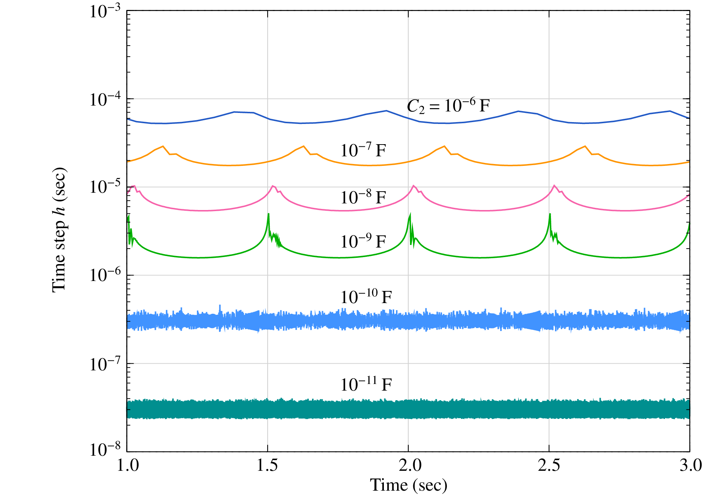{kind=link}
Sounds good, but there is a flip side. Take for example \(C_2 = 10^{-10}\,{\textrm{F}}\). The impedance \({\bf{Z}}_2\) is then \(-j64\,{\textrm{M}}\Omega\) (at \(f = 1\,{\textrm{kHz}}\)), and it is an open circuit for all practical purposes. The circuit reduces to a series combination of \(R_1\) and \(C_1\), and the solution is independent of \(C_2\) (as long as it is small enough). We now have an unfortunate situation in which \(C_2\) has no effect on the solution, yet it forces small time steps because of stability considerations.
The above situation is an example of “stiff” circuits in which the time constants are vastly different. We are often not interested in tracking the solution of a stiff circuit on the scale of the smallest time constant, but because of the stability constraints imposed by the numerical method, we are forced to use small time steps. This is a drawback of explicit methods since, like the RK4 method, they are conditionally stable.
Application to flow graphs¶
In this section, we describe how GSEIM handles a flow graph when an explicit numerical scheme (such as forwar Euler, RK4, RKF45) is used. We will consider a simple flow graph (see figure) for the purpose of illustration. The signals have been named as \(x_1\), \(x_2\), etc. and the blocks as A, B, etc. The flow graph corresponds to the ODE: \(\displaystyle\frac{dx_6}{dt} = k_1x_1 + k_2x_2\), where \(x_1 = A_1 \sin \omega _1 t\), \(x_2 = A_2 \sin \omega _2 t\) (for example).
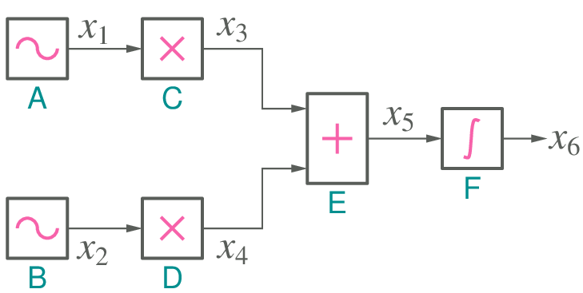{kind=link}
The flow graph has the following elements (blocks):
- signal sources (A, B)
- scalar multipliers (C, D)
- summer (E)
- integrator (F)
The integrator equation is \(x_6 = \displaystyle\int x_5dt\), or equivalently, \(\displaystyle\frac{dx_6}{dt} = x_5\). For simplicity, we will use the forward Euler method to handle the time derivative involved in the integrator equation. The remaining elements can be described by algebraic equations, not involving time derivatives. Denoting the numerical solution for \(x_1\) at \(t_n\) as \(x_1^n\), etc., we have the following equations for the blocks.
- Block A: \(x_1^{n+1} = A_1 \,\sin \omega _1 t_{n+1}\)
- Block B: \(x_2^{n+1} = A_2 \,\sin \omega _2 t_{n+1}\)
- Block C: \(x_3^{n+1} = k_1 \,x_1^{n+1}\)
- Block D: \(x_4^{n+1} = k_2 \,x_2^{n+1}\)
- Block E: \(x_5^{n+1} = x_3^{n+1} + x_4^{n+1}\)
- Block F: \(x_6^{n+1} = x_6^n + \Delta t \times x_5^n\)
Simple enough. The question is: In what order should we visit these equations? The order obviously depends on how the elements are connected in the flow graph. For example, it makes sense to evaluate the summer output \(x_5^{n+1}\) only after its inputs \(x_3^{n+1}\) \(x_4^{n+1}\) have been updated.
The following observations would help in deciding on the order in which the blocks should be processed.
- The integrator equation involves only the past values on the right hand side; it can be evaluated independently of the other blocks, i.e., we can process the integrator first and then the remaining blocks, keeping in mind the flow graph connections.
- Source elements do no have inputs. We can therefore process them independently of the other blocks.
- The remaining blocks should be processed in an order which ensures that the inputs of a given block are updated before updating its outputs.
Using the above considerations, we can come up with the following options for processing the blocks:
- F \(\rightarrow\) A \(\rightarrow\) B \(\rightarrow\) C \(\rightarrow\) D \(\rightarrow\) E
- F \(\rightarrow\) A \(\rightarrow\) B \(\rightarrow\) D \(\rightarrow\) C \(\rightarrow\) E
- F \(\rightarrow\) B \(\rightarrow\) A \(\rightarrow\) C \(\rightarrow\) D \(\rightarrow\) E
- F \(\rightarrow\) B \(\rightarrow\) A \(\rightarrow\) D \(\rightarrow\) C \(\rightarrow\) E
- F \(\rightarrow\) A \(\rightarrow\) C \(\rightarrow\) B \(\rightarrow\) D \(\rightarrow\) E
Note that all of these options are equivalent; the simulator can pick any of them and use it in each time step.
With this background, we can also understand why Simulink processes blocks in a certain order. For example, here is the Simulink block diagram for the same ODE, i.e., \(\displaystyle\frac{dx_6}{dt} = k_1x_1 + k_2x_2\).
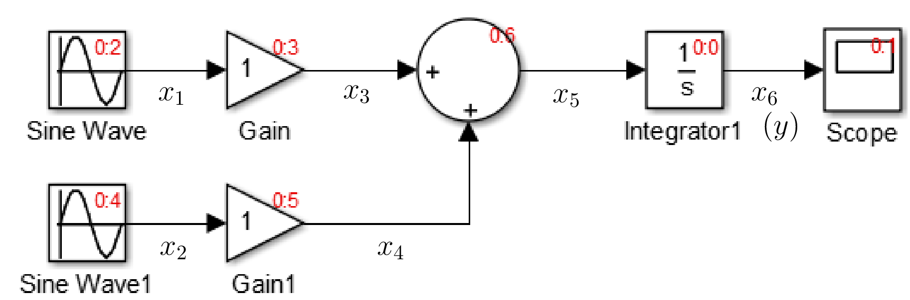{kind=link}
Simulink uses red labels (see figure) to indicate the order in which
the blocks are processed. For example, for the integrator block, the
label is 0:0, where the number after the colon indicates that it
is the first block to be processed. The second block to be processed
is the scope, but we can ignore it since it is used only for plotting.
After that, the top source is processed, and so on. The reader can verify
that the order corresponds to our last option, viz.,
F \(\rightarrow\) A \(\rightarrow\) C \(\rightarrow\)
B \(\rightarrow\) D \(\rightarrow\) E.
A slightly more complex Simulink block diagram along with the ordering annotations is shown below. It is a good exercise to verify that it is consistent with our remarks.
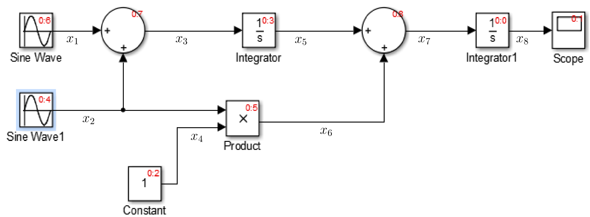{kind=link}
An important point to note is the simplicity
of the simulation process when an explicit method is used.
Each of the above steps is straightforward – almost
trivial – to execute. In fact, even a nonlinear operation
(such as \(x_6 = x_2\times x_4\) in the block marked 0:5)
requires no special consideration; it is just another
evaluation. In this respect, more complicated explicit
methods, such as the fourth-order Runge-Kutta method or the RKF45
method, are no different. They all involve evaluation
of a left-hand side using known numbers on the right-hand side.
This is in sharp contrast with
implicit methods, as we shall see.
Algebraic loops¶
Consider the feedback loop shown in the figure.
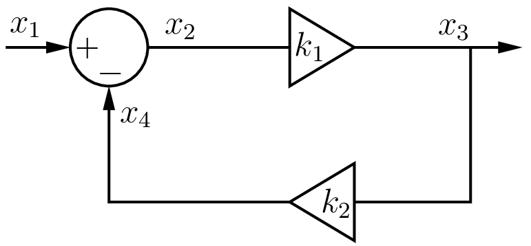{kind=link}
We can write the following equation for this system:
giving
This result is valid at all times, and we can obtain \(x_3(t_n)\) in terms of \(x_1(t_n)\) simply by evaluating the above formula. Let us see if we can arrive at the same result by writing out the equations for the respective blocks, as we did earlier. Here are the equations we get:
As before, we wish to evaluate these formulas one at a time, but this leads to a conflict. Eqs. (106) to (108) are supposed to be valid simultaneously. For example, the value of \(x_3^{n+1}\) in Eqs. (107) and (108) is supposed to be the same. However, since Eq. (108) is evaluated after Eq. (107), the two values are clearly different. This type of conflict occurs when there is an algebraic loop in the system, i.e., there is a loop in which the variables are related through purely algebraic equations, not involving time derivatives.
For an explicit method, an algebraic loop presents a roadblock. We have the following options for a system with one or more algebraic loops.
If possible, avoid algebraic loops. In the above example, this would mean using \(x_3 = \displaystyle\frac{k_1}{1 + k_1 k_2}\,x_1\) directly.
Insert a delay element to “break” an algebraic loop as shown in the following figure.
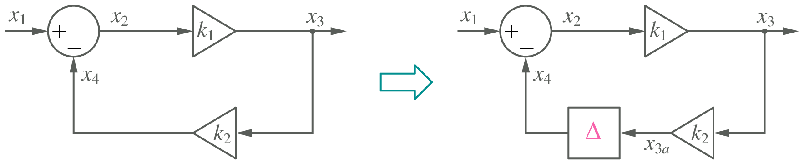How does this help? The system equations can now be written as
(109)¶\[\begin{split}\begin{align} x_4^{n+1} &= x_{3a}^n \,,\\ x_2^{n+1} &= x_1^{n+1} + x_4^{n+1} \,,\\ x_3^{n+1} &= k_1\,x_2^{n+1} \,,\\ x_{3a}^{n+1} &= k_2\,x_3^{n+1} \,. \end{align}\end{split}\]Note that \(x_{3a}\) in the first equation has a superscript \(n\) because of the delay element. We can see that the variables have now got “decoupled,” allowing a sequential evaluation of the formulas, not requiring any iterative procedure. If the delay is small compared to the time constants in the overall system, this approach – however crude it may sound – gives acceptable accuracy although it does change the original problem to some extent.
Treat the integrator block(s) first (since their outputs depend only on the past values), compute their outputs, and with those held constant, solve the system of equations representing the rest of the system. Let us illustrate this process with the following example.
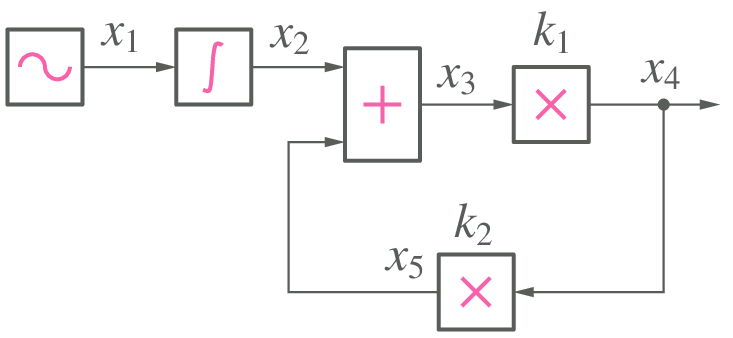We first update the integrator output as
\[x_2^{n+1} = x_2^n + h\,x_1^n\,,\]where \(h\) is the time step. Now, we treat \(x_2^{n+1}\) as a constant (say, \(c\)), and assemble the equations as follows.
(110)¶\[\begin{split}\begin{align} x_2^{n+1} &= c,\\ x_1^{n+1} &= A_1 \sin \omega \, t_{n+1},\\ x_3^{n+1} &= x_2^{n+1} + x_5^{n+1},\\ x_4^{n+1} &= k_1\,x_3^{n+1},\\ x_5^{n+1} &= k_2\,x_4^{n+1}. \end{align}\end{split}\]We have now obtained a system of equations which can be solved to get updated values of \(x_1\), \(x_3\), \(x_4\), \(x_5\). Note that, in this example, the system of equations happens to be linear, but in the general case, it could be nonlinear.
Use an implicit method; in that case, algebraic loops do not need any special treatment.
{kind=link}
{kind=link}
Implicit methods¶
We have discussed so far a few explicit methods (in particular, the Forward Euler (FE), Runge-Kutta order 4 (RK4), and Runge-Kutta-Fehlberg (RKF45) methods) for solving the ODE \(\displaystyle\frac{dx}{dt} = f(t,x)\), with \(x(t_0) = x_0\). We have also seen how the RKF45 method – a combination of an RK4 method and an RK5 method – can be used to control the time step in order to maintain a given accuracy (tolerance). There are several other explicit methods available in the literature (see [Lapidus, 1971], for example). We can summarise the salient features of explicit methods as follows.
- Explicit methods are easy to implement since they only involve evaluation of quantities rather than solution of equations. The computational effort per time point is therefore relatively small.
- Explicit methods can be extended to a system of ODEs in a straightforward manner. If there are \(N\) ODEs, the computational effort would increase by a factor of \(N\) as compared to solving a single ODE (assuming all ODEs to be of similar complexity).
- Explicit methods are conditionally stable – if the time step is not sufficiently small (of the same order as the smallest time constant), the numerical solution can “blow up” (i.e., become unbounded).
- In some problems, it may be difficult to know the various time constants involved. In such cases, the “auto” (automatic or adaptive) time step methods such as RKF45 are convenient. These methods can adjust the time step automatically to ensure a certain accuracy (in terms of the local truncation error estimate) and in the process keep the numerical solution from blowing up.
- Explicit methods are not suitable for stiff problems in which there are vastly different time constants involved. This is because the stability constraints imposed by an explicit method force small time steps which may not be required from the accuracy perspective at all.
Given the above limitations, it is clear that an alternative must be found for explicit methods. Implicit methods provide that alternative.
BE, TRZ, and BDF2 methods¶
We will now look at the most commonly used implicit methods, viz., the backward Euler and trapezoidal methods. Systematic approaches are available to derive these methods [Patil 2009]; here, we will present a simplistic intuitive picture. Consider
Suppose the solution \(x(t)\) is given by the curve shown in the following figure.
{kind=link}
Fig. 5 Simple derivation of FE and BE formulas.
Consider the slope of the line joining the points \((t_n,x(t_n))\) and \((t_{n+1},x(t_{n+1}))\), i.e., \(m = \displaystyle\frac{x(t_{n+1})-x(t_n)}{h}\). The forward Euler (FE) method results if we approximate the slope as
where \(x_n\) and \(x_{n+1}\) are the numerical solutions at \(t_n\) and \(t_{n+1}\), respectively.
The backward Euler (BE) method results if the slope \(m\) is equated to the slope at \((t_{n+1},x_{n+1})\), i.e., \(\left. \displaystyle\frac{dx}{dt}\right|_{(t_{n+1},x_{n+1})}\) rather than \(\left. \displaystyle\frac{dx}{dt}\right|_{(t_n,x_n)}\). In that case, we get
leading to
In case of the trapezoidal (TRZ) method, the slope \(m\) is equated to the average of the two slopes (at \((t_{n},x_{n})\) and \((t_{n+1},x_{n+1})\)), i.e.,
leading to
Note that we have shown the time steps to be uniform in Fig. 5, but the above equations can also be used for non-uniform time steps by replacing \(h\) with \(h_n \equiv t_{n+1}-t_n\).
The BE and TRZ methods are implicit in nature since \(x_{n+1}\) is involved in the right-hand sides of Eqs. (114) and (116). In other words, \(x_{n+1}\) cannot be simply evaluated in terms of known quantities (except in some special cases such as \((a)\,f(t_{n+1},x_{n+1})\) is linear in \(x_{n+1}\), \((b)\,f(t_{n+1},x_{n+1})\) does not involve \(x_{n+1}\) at all, e.g., \(f(t,x) = \cos \omega t\)).
Instead, it needs to be obtained by solving Eq. (114) or Eq. (116). As an example, consider
The FE and BE methods give the discretised equations,
There is a fundamental difference between the two equations in terms of computational effort. If we use the FE method, \(x_{n+1}\) can be obtained by simply evaluating the right-hand side (since \(x_n\) is known). With the BE method, the task is far more complex because the presence of \(x_{n+1}\) on the RHS has made the equation nonlinear, thus requiring an iterative solution process. If we use the NR method, for example, then each iteration will involve evaluation of the function, its derivative, and the correction. Clearly, the work involved per time point is much more when the BE method is used. The following C program shows the implementation of the FE and BE methods for solving Eq. (117).
1 2 3 4 5 6 7 8 9 10 11 12 13 14 15 16 17 18 19 20 21 22 23 24 25 26 27 28 29 30 31 32 33 34 35 36 37 38 39 40 41 42 43 44 45 46 47 48 49 50 51 52 53 54 55 56 57 58 | #include<stdio.h>
#include<stdlib.h>
#include<math.h>
int main()
{
double t,x,f,t_start,t_end,h;
double x_old;
double f_nr,dfdx_nr,delx_nr;
int i_nr,nmax_nr=10;
FILE *fp;
t_start = 0.0;
t_end = 8.0;
h = 0.05;
// Forward Euler:
fp=fopen("fe.dat","w");
t=t_start;
x = 0.0; // initial condition
fprintf(fp,"%13.6e %13.6e\n",t,x);
while (t <= t_end) {
f = cos(x);
x = x + h*f;
t = t + h;
fprintf(fp,"%13.6e %13.6e\n",t,x);
}
fclose(fp);
// Backward Euler:
fp=fopen("be.dat","w");
t=t_start;
x = 0.0; // initial condition
x_old = x;
fprintf(fp,"%13.6e %13.6e\n",t,x);
while (t <= t_end) {
// Newton-Raphson loop
for (i_nr=0; i_nr < (nmax_nr+1); i_nr++) {
if (i_nr == nmax_nr) {
printf("N-R did not converge.\n");
exit(0);
}
f_nr = x - h*cos(x) - x_old;
if (fabs(f_nr) < 1.0e-8) break;
dfdx_nr = 1.0 + h*sin(x);
delx_nr = -f_nr/dfdx_nr;
x = x + delx_nr;
}
t = t + h;
fprintf(fp,"%13.6e %13.6e\n",t,x);
x_old = x;
}
fclose(fp);
}
|
The results are shown in the following figure for a step size of \(h = 0.05\).
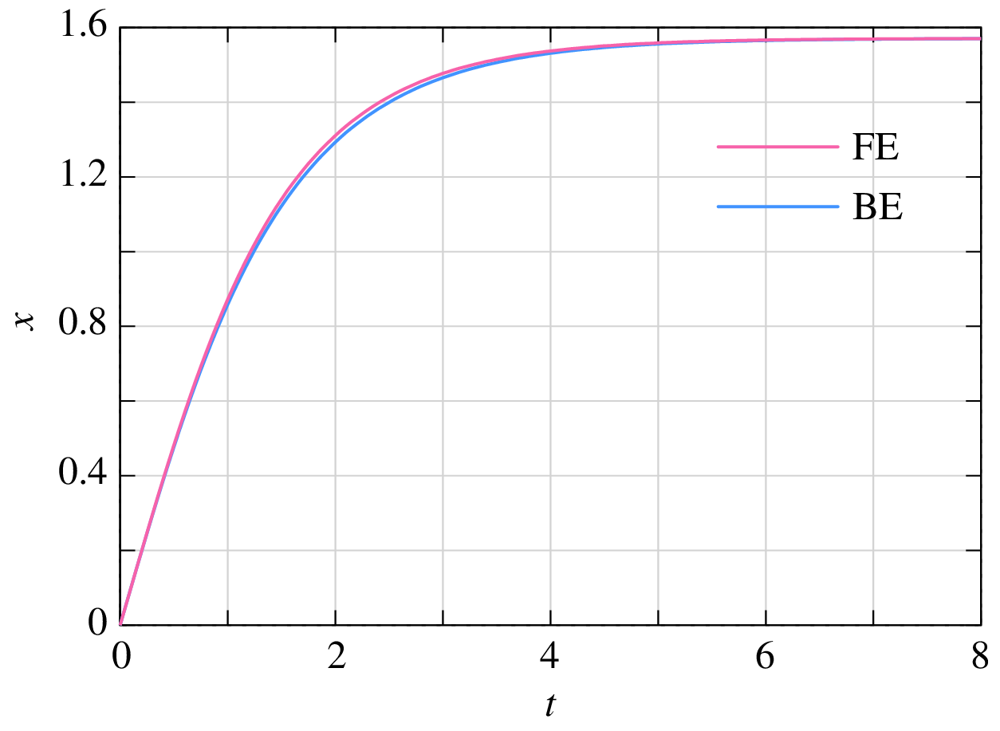{kind=link}
The BE and TRZ methods can be extended to solve a set of ODEs (see Eqs. (86), (87)):
where \({\bf{x}}^{(n)}\) stands for the numerical solution at \(t_n\), and so on. As an illustration, let us consider the set of two ODEs seen earlier (Eq. (90)) and reproduced here:
with the initial condition, \(x_1(0) = 0\), \(x_2(0) = 0\). The BE equations are given by
We now have a set of nonlinear equations which must be solved at each time point. The NR method is commonly used for this purpose, and it entails computation of the Jacobian matrix and the function vector, and solution of the Jacobian equation (of the form \({\bf{A}}{\bf{x}} = {\bf{b}}\)) in each iteration of the NR loop. As \(N\) (the number of ODEs) increases, the computational cost of solving the Jacobian equations increases superlinearly (\(O(N^3)\) for a dense matrix). On the other hand, with an explicit method, we do not require to solve a system of equations, and the computational effort can be expected to grow linearly with \(N\) (see the FE equations given by Eq. (91), for example). With respect to computational effort, explicit methods are therefore clearly superior to implicit methods if the number of time points to be simulated is the same in both cases. That is a big if, as we will soon discover.
Another implicit method commonly used in circuit simulation is the Backward Differentiation Formula of order 2 (BDF2), also known as Gear’s method of order 2. It is given by
Note that the BDF2 method involves \(x_{n-1}\) (in addition to \(x_{n+1}\) and \(x_n\)), i.e., the numerical solution at \(t_{n-1}\). In deriving Eq. (122), the time step is assumed to be uniform, i.e., \(t_{n+1}-t_n = t_n -t_{n-1} = h\); however, it is possible to extend the BDF2 formula to the case of non-uniform time steps [McCalla, 1987]. With the BDF2 method (methods involving multiple steps in general), starting is an issue since at the very beginning (\(t = t_0\)), the solution is available only at one time point, \(x(t_0)\). In practice, a single-step method such as the BE method is used to first go from \(t_0\) to \(t_1\). The BDF2 method can then be used to compute \(x_2\) from \(x_0\) and \(x_1\), \(x_3\) from \(x_1\) and \(x_2\), and so on.
Stability¶
As we have seen in the Stability section, the explicit methods we have discussed, viz., FE and RK4, are conditionally stable. This puts an upper limit \(h_{\mathrm{max}}\) on the step size while solving the test equation,
For the FE method, \(h_{\mathrm{max}}\) is \(2\,\tau\), and for the RK4 method, it is \(2.8\,\tau\). Other explicit methods are also conditionally stable.
The FE method is a member of the Adams-Bashforth (AB) family of explicit linear multi-step methods. The regions of stability of the AB methods with respect to Eq. (123) are shown in Fig. 6 (a). For the AB1 (FE) method, we require \(h/\tau < 2\), as we have already seen. As the order increases, the AB methods become more accurate, but the region of stability shrinks.
{kind=link}
Fig. 6 Regions of stability for A-B and A-M methods.
The BE and TRZ methods belong to the Adams-Moulton (AM) family of implicit linear multi-step methods. The BE method is of order 1 while the TRZ method is of order 2. The stability properties of the AM methods with respect to Eq. (123) are shown in Fig. 6 (b). The BE and TRZ methods are unconditionally stable while higher-order AM methods have finite regions of stability which shrink as the order increases. (Note: The BDF2 formula given by Eq. (122) is also unconditionally stable, see [Patil, 2009]).
The unconditional stability of the BE and TRZ methods allows us to break free from the stability constraints which arise when an explicit method is used for a stiff circuit (see Stability). This is a huge benefit; it means that, if we use the BE or TRZ method, the only restriction on the time step comes from accuracy of the numerical solution and not from stability. For example, let us re-visit the stiff circuit shown in the following figure with \(V_m = 1\,{\textrm{V}}\), \(f = 1\,{\textrm{kHz}}\). The time step is \(h = 0.02\,{\textrm{msec}}\). We recall that, for this circuit, the RKF45 method was forced to use very small time steps – of the order of nanoseconds – because of stability considerations. The BE method is not constrained by stability issues, and therefore a much larger time step (\(h = 0.02\,{\textrm{msec}}\)) can be used to obtain the numerical solution, as shown in the figure.
{kind=link}
Fig. 7 Stiff circuit example
As another example, consider the half-wave rectifier circuit shown below.
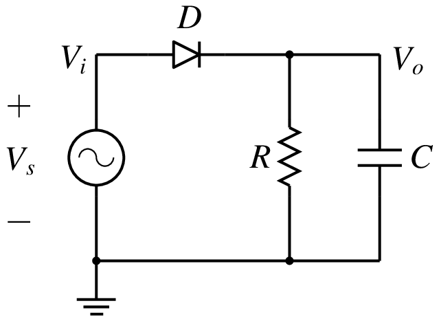{kind=link}
The diode is represented with the \(R_{\mathrm{on}}\)/\(R_{\mathrm{off}}\) model, with a turn-on voltage equal to \(0\,{\textrm{V}}\) and \(R_{\mathrm{off}} = 1\,{\textrm{M}}\Omega\). The other parameters are \(V_m = 1\,{\textrm{V}}\), \(f = 50\,{\textrm{Hz}}\), \(R = 500\,\Omega\), \(C = 600\,\mu {\textrm{F}}\).
The circuit behaviour is described by the ODE,
where \(R_D\) is the diode resistance (\(R_{\mathrm{on}}\) if \(V_s > V_o\); \(R_{\mathrm{off}}\) otherwise). The numerical solution of the above ODE obtained with the RKF45 method is shown below.
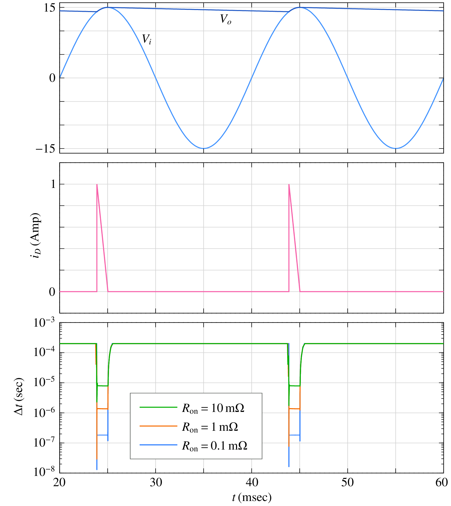{kind=link}
The charging and discharging intervals can be clearly identified – charging takes place when the diode current is non-zero; otherwise, the capacitor discharges through the load resistor. When the diode conducts, the circuit time constant is \(\tau _1= (R_{\mathrm{on}}\parallel R)\,C\) (approximately \(R_{\mathrm{on}}C\)); otherwise it is \(\tau _2 =R\,C\). The RKF45 method – like other conditionally stable methods – requires that the time step be of the order of the circuit time constant. Since \(\tau _ 1 \ll \tau _2\), the time step used by the RKF45 algorithm is much smaller in the charging phase compared to the discharging phase, as seen in the figure. If we use a smaller value of \(R_{\mathrm{on}}\), \(\tau _1\) becomes smaller, and smaller time steps get forced.
On the other hand, the BE or TRZ method would not be constrained by stability considerations at all, and for these methods, a much larger time step can be selected as long as it gives sufficient accuracy. For the half-wave rectifier example, \(20\,\mu {\textrm{sec}}\) is suitable, irrespective of the value of \(R_{\mathrm{on}}\).
Some practical issues¶
We have already covered the most important aspects of numerical methods for solving ODEs: (a) comparison of explicit and implicit methods with respect to computation time, (b) accuracy (order) of a method, (c) constraints imposed on the time step by stability considerations of a method. In addition, we need to understand some specific situations which arise in circuit simulation.
Oscillatory circuits¶
Consider an \(LC\) circuit without any resistance (see figure) and with the initial conditions, \(v_C(0) = 1\,{\textrm{V}}\), \(i_L(0) = 0\,{\textrm{A}}\).
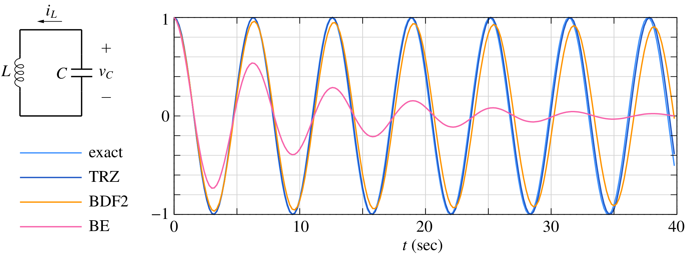{kind=link}
The circuit equations can be described by the following set of ODEs.
with the analytic solution given by
with \(\omega = 1/\sqrt{LC}\). We will consider \(L = 1\,{\textrm{H}}\), \(C = 1\,{\textrm{F}}\) which gives the frequency of oscillation \(f_0 = 1/2\pi\,{\textrm{Hz}}\), i.e., a period \(T = 2\pi\,{\textrm{sec}}\). The numerical results for \(v_C(t)\) obtained with the BE, TRZ, and BDF2 methods along with the analytic (exact) solution are shown in the figure. The TRZ method maintains the amplitude of \(v_C(t)\) constant whereas the BE and BDF2 methods lead to an artificial reduction (damping) of the amplitude with time. Clearly, the BE and BDF2 methods are not suitable for purely oscillatory circuits or for circuits with small amount of natural damping. In such cases, the TRZ method should be used.
Although the TRZ method does not result in an amplitude error, it does give a phase error, i.e., the phase of \(v_C(t)\) differs from the expected phase as time increases. To observe the phase error, expand the plot (zoom in), and look at the exact and TRZ results; you will see the phase error growing with time. The phase error can be reduced by selecting a smaller time step.
Ringing¶
Consider the RC circuit shown in the figure. The component values are \(R_1 = R_2 = R_3 = 1\,\Omega\), \(C_1 = C_2 = C_3 = 1\,{\textrm{F}}\), \(V_C(0) = 0\,{\textrm{V}}\) for all capacitors. A step input going from \(0\,{\textrm{V}}\) to \(1\,{\textrm{V}}\) at \(t = 0\) is applied.
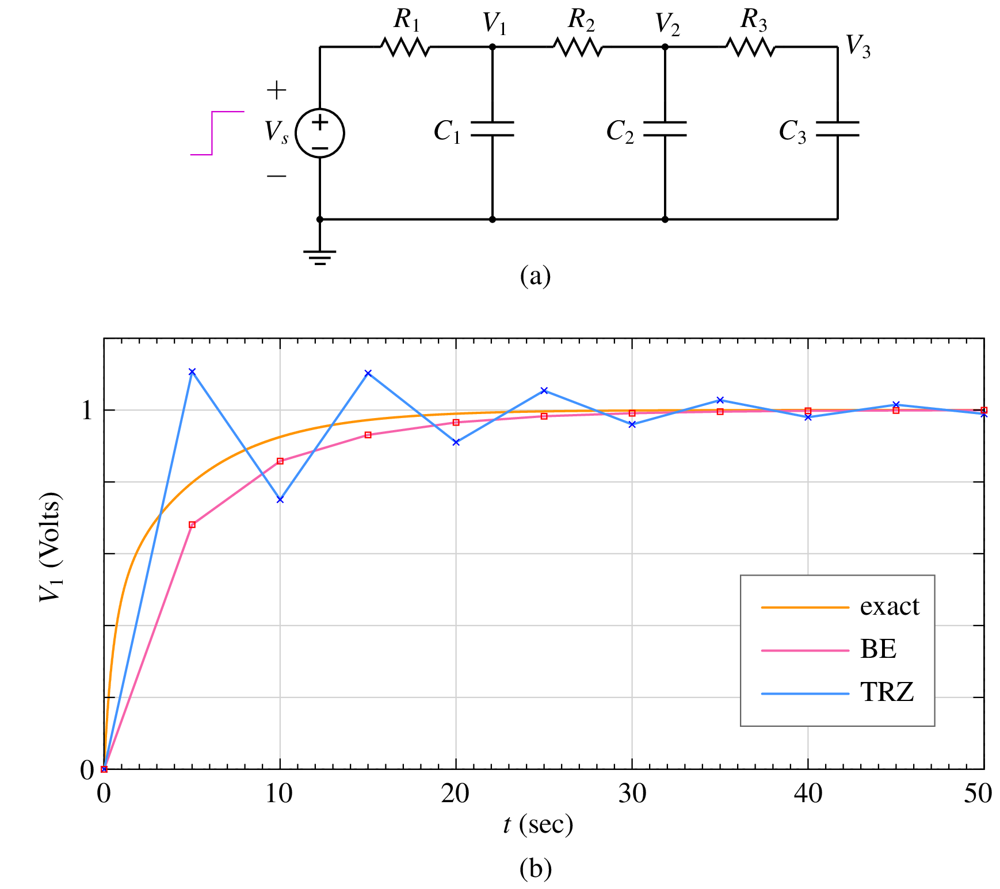{kind=link}
The time constants for this circuit are 0.31, 0.64, and 5.05 seconds, the smallest being \(\tau _{\mathrm{min}} = 0.31\,{\textrm{sec}}\). BE and TRZ results with a relatively large time step are shown in the figure. Sine the time step (\(5\,{\textrm{sec}}\)) is much larger than \(\tau _{\mathrm{min}}\), neither of the two methods can track closely the expected solution. However, there is a substantial difference in the nature of the deviation of the numerical solution from the exact solution – With the TRZ method, the numerical solution overshoots the exact solution, hovers around it in an oscillatory manner, and finally returns to the expected value when the transients have vanished. This phenomenon, which is specifically associated with the TRZ method, is called “ringing.” The BE result, in contrast, approaches the exact solution without overshooting.
Is ringing relevant in practice? Are we ever going to use a time step which is much larger than \(\tau _{\mathrm{min}}\)? Yes, the situation does arise in practice, and we should therefore be watchful. For example, in a typical power electronic circuit, there is frequent switching activity. Whenever a switch closes, we can expect transients. Since the switch resistance is small, \(\tau _{\mathrm{min}}\) is also small, typically much smaller than the time scale on which we want to resolve the transient. In other words, in such cases, the time step would be often much larger than \(\tau _{\mathrm{min}}\), and we can expect ringing to occur if the TRZ method is used. If there is a good reason for using the TRZ method for the specific simulation of interest, the time step should be suitably reduced in order to avoid ringing.
TR-BDF2 method¶
The TR-BDF2 method is a combination of TRZ and BDF2 methods. In this method [Bank, 1992], the time interval \(h\) from \(t_n\) to \(t_{n+1}\) is divided into two intervals, as shown in the figure.
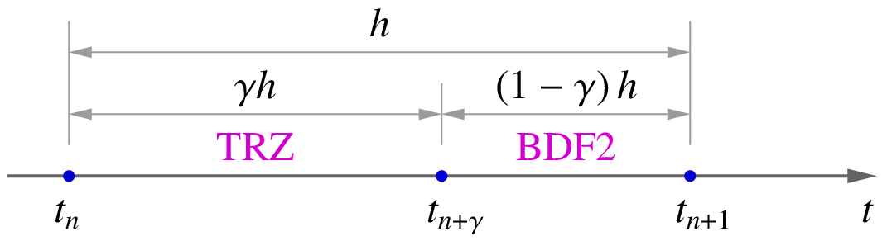{kind=link}
The TRZ method is used to go from \(x_n\) to \(x_{n+\gamma}\) (i.e., the numerical solution at \(t_{n+\gamma} \equiv t_n + \gamma h\)). In the second step, the BDF2 method is used (using the three points, \(t_n\), \(t_{n+\gamma}\), and \(t_{n+1}\)), to compute \(x_{n+1}\). The constant \(\gamma\) is selected such that the TRZ and BDF2 Jacobian matrices are identical (which means that the same \(LU\) factorisation can be used in the TRZ and BDF2 steps). This leads to the following condition:
or \(\gamma = 2-\sqrt{2} \approx 0.59\).
The TR-BDF2 method has the following advantages.
- It does not exhibit ringing.
- Although BDF2 is a two-step method, TR-BDF2 is a single-step method since the solution at \(t_{n+\gamma}\) is an intermediate result in going from \(t_n\) to \(t_{n+1}\). Therefore, no special procedure for starting is required.
- The TR-BDF2 method can be used for auto (adaptive) time stepping by estimating the LTE and comparing it with a user-specified tolerance.
Systematic assembly of circuit equations¶
A circuit simulator like SPICE must be able to handle any general circuit topology, and it should get the solution in an efficient manner. In this section, we will see how a general circuit involving time derivatives (e.g., in the form of capacitors and inductors) is treated in a circuit simulator.
Consider the circuit shown below.
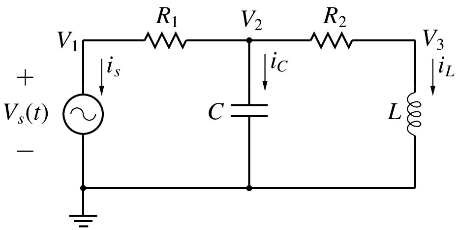{kind=link}
The following equations describe the circuit behaviour, taking into account the relationship to be satisfied for each element in the circuit.
where \(G_1 = 1/R_1\). \(G_2 = 1/R_2\). Note that the above system of equation is a “mixed” system – The first two equations are ODEs whereas the last equation is an algebraic equation. Such a set of equations is called “Differential-algebraic equations” (DAEs). In some cases, it may be possible to manipulate the equations to eliminate the algebraic equations and reduce the original set to an equivalent set of ODEs. However, that is not possible in general, especially when nonlinear terms are involved.
How did we come up these equations? We knew that the equations for the capacitor current and inductor voltage must be included somewhere. We looked at the circuit and found that there is a KCL which involves the capacitor current. Similarly, there is a node voltage which is the same as the inductor voltage. We then invoked the circuit topology and wrote the equations such that they describe the circuit completely. In other words, we used our intuition about circuits. Unfortunately, this is not a systematic approach and is therefore of no particular use in writing a general-purpose circuit simulator. Instead of an ad hoc approach, we can use a systematic approach we have already seen before – the MNA approach – and write the circuit equations as
where the first three are KCL equations, and the last equation is the element equation for the voltage source. Our interest is in obtaining the solution of the above equations for \(t_{n+1}\) from that available for \(t_n\). Let us write the above equations specifically for \(t = t_{n+1}\):
Next, we select a method for discretisation of the time derivatives. As we have seen earlier, stability constraints restrict the choice to the BE, TRZ, and BDF2 methods, all of them being implicit in nature. Note that implicit Runge-Kutta methods are also unconditionally stable, but they are suitable only when the circuit equations can be written as a set of ODEs.
Suppose we choose the BE method. The capacitor and inductor currents (\(i_C^{n+1}\), \(i_L^{n+1}\)) are then obtained as
where \(h = t_{n+1}-t_n\) is the time step. Substituting for \(i_C^{n+1}\) and \(i_L^{n+1}\) in Eq. (130), we get
a linear system of four equations in four variables (\(V_1^{n+1}\), \(V_2^{n+1}\), \(V_3^{n+1}\), \(i_s^{n+1}\)). It is now a simple matter of solving this \({\bf{A}}{\bf{x}} = {\bf{b}}\) type problem to obtain the numerical solution at \(t_{n+1}\). We should keep in mind that solving \({\bf{A}}{\bf{x}} = {\bf{b}}\) is conceptually simple but can take a significant amount of computation time when the system is large.
What if there are nonlinear elements in the circuit? Let us consider the circuit shown in the following figure.
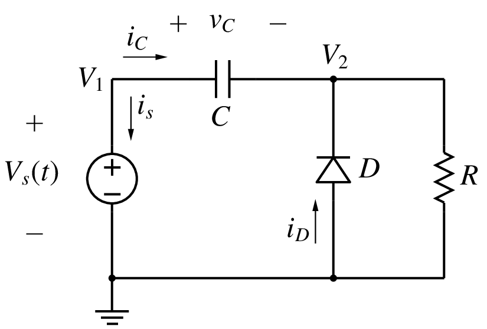{kind=link}
The diode is described by
We can write the MNA equations for this circuit as
with \(G = 1/R\). At \(t = t_{n+1}\), the equations are
The next step is to obtain \(i_C^{n+1}\) using the BE approximation for the capacitor equation:
Finally, substituting for \(i_C^{n+1}\) in Eq. (138), we get
We now have a nonlinear set of three equations in three variables (\(V_1^{n+1}\), \(V_2^{n+1}\), \(i_s^{n+1}\)). Generally, circuit simulators would use the NR method to solve these equations because of the attractive convergence properties of the NR method seen earlier. Note that the NR loop needs to be executed in each time step, i.e., the Jacobian equation \({\bf{J}}\Delta {\bf{x}} = -{\bf{f}}\) must be solved several times in each time step until the NR process converges. Obviously, this is an expensive computation but it simply cannot be helped. Some tricks may be employed to make the NR process more efficient, e.g., \({\bf{J}}^{-1}\) from the previous NR iteration can be used if \({\bf{J}}\) has not changed significantly.
The benefits of the above approach (we will refer to it as the “DAE approach”) outweigh the computational complexity:
- Since unconditionally stable methods (BE, TRZ, BDF2) are used, stiff circuits can be handled without very small time steps.
- Algebraic loops do not pose any special problem since the set of differential-algebraic equations is solved directly, without any approximations.
Adaptive time steps using NR convergence¶
As we have seen in the Newton-Raphson method section, the initial guess plays an important role in deciding whether the NR process will converge for a given nonlinear problem. This feature can be used to control the time step in transient simulation. The solution obtained at \(t_n\) serves as the initial guess for solving the circuit equations at \(t_{n+1}\). If \(h \equiv t_{n+1}-t_n\) is sufficiently small, we expect the initial guess to work well, i.e., we expect the NR process to converge. If \(h\) is large, the NR process may not converge, or may take a larger number of iterations to converge. By monitoring the NR convergence process, it is possible control the time step.
The flow chart for auto (adaptive) time steps is shown below.
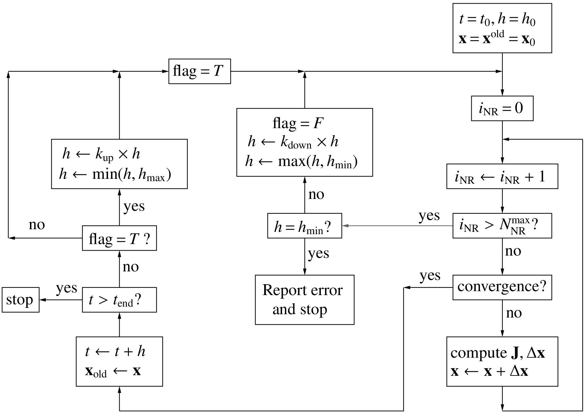{kind=link}
The basic idea is to allow only a certain maximum number \(N_{\mathrm{NR}}^{\mathrm{max}}\) of NR iterations at each time point. If the NR process does not converge, it means that the time step being taken is too large, and it needs to be reduced (by a factor \(k_{\mathrm{down}}\)). However, if the NR process consistently converges in less than \(N_{\mathrm{NR}}^{\mathrm{max}}\) iterations, it means that a small time step is not necessary any longer, and we then increase it (by a factor \(k_{\mathrm{up}}\)). In this manner, the step size is made small when required but is allowed to become larger when convergence is easier. In practice, this means that small time steps are forced when the solution is varying rapidly, and large time steps are used when the solution is varying gradually.
Application of the above procedure to an oscillator circuit is shown in the following figure. The parameter values are \(R_1 = R_2 = 1\,{\textrm{k}}\Omega\), \(R_0 = 100\,\Omega\), \(C = 1\,\mu {\textrm{F}}\), \(C_0 = 0.1\,\mu {\textrm{F}}\), \(V_{IL} = 1 \,{\textrm{V}}\), \(V_{IH} = 4 \,{\textrm{V}}\), \(V_{OL} = 0 \,{\textrm{V}}\), \(V_{OH} = 5 \,{\textrm{V}}\), \(h_{\mathrm{min}} = 10^{-9} \,{\textrm{sec}}\), \(h_{\mathrm{max}} = 10^{-4} \,{\textrm{sec}}\), \(k_{\mathrm{up}} = 1.1\), \(k_{\mathrm{down}} = 0.8\), \(N_{\mathrm{NR}}^{\mathrm{max}} = 10\).
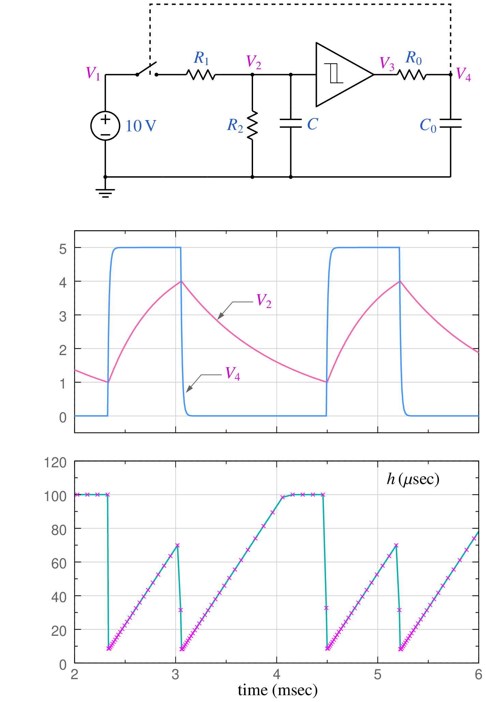{kind=link}
The output voltage \(V_4\) controls the switch – when \(V_4\) is high, the switch turns on; otherwise, it is off. Note that, when \(V_4\) changes from low to high (or high to low), small time steps get forced. As \(V_4\) settles down, the time steps become progressively larger, capped finally by \(h_{\mathrm{max}}\).
References¶
- [Lapidus, 1971] L. Lapidus and J.H. Seinfeld, Numerical Solution of Ordinary Differential Equations. New York: Academic Press, 1971.
- [McCalla, 1987] W.J. McCalla, Fundamentals of Computer-Aided Circuit Simulation. Boston: Kluwer Academic, 1987.
- [Bank, 1992] R.E. Bank, W.M. Coughran, W. Fichtner, E.H. Grosse, D.J. Rose, and R.K. Smith, “Transient simulation of silicon devices and circuits”, IEEE Trans. Electron Devices, vol. 32, pp. 1992-2006, 1992.
- [Shampine, 1994] L.F. Shampine, Numerical Solution of Ordinary Differential Equations. New York: Chapman and Hall, 1994.
- [Burden, 2001] R.L. Burden and J.D. Faires, Numerical Analysis. Singapore: Thomson, 2001.
- [Patil, 2009] M.B. Patil, V. Ramanarayanan, and V.T. Ranganathan, Simulation of power electronic circuits. New Delhi: Narosa, 2009.